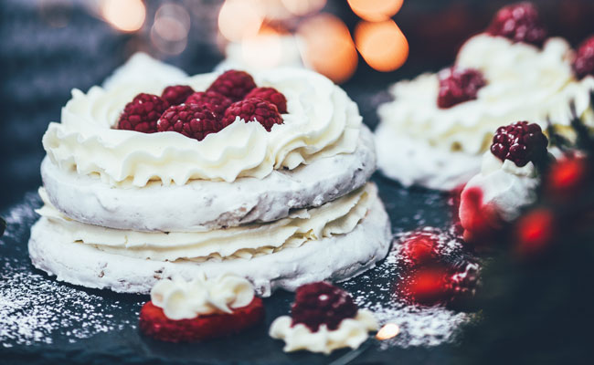

Shooting Star Sugar Cookie Cake with White Chocolate Ganache-Filled Raspberries
The White Chocolate Ganache is a versatile ingredient which can be used for glazing cakes, making truffles, and even filling raspberries. It has a sweet, creamy flavour on its own, but can be flavoured with extracts or fruit purées to customize it to whatever you’re making. Note: The White Chocolate Ganache-Filled Raspberries are best made the day they’re going to be eaten (and they’re beautiful on top of a cake or even served as-is in a small bowl). We used a large star-shaped cookie cutter for this cake but any shape will do.
Ingredients
Vanilla Bean Sugar Cookies
3 ½ cups all-purpose flour
1 cup butter, at room temperature
1 ¼ cup sugar
2 large eggs
½ tsp salt
2 tsp vanilla extract or 1 tbsp vanilla bean paste
White Chocolate Ganache-Filled Raspberries
12 oz (about 340g) best quality white chocolate, finely chopped
¾ cup heavy cream
2 tbsp butter, at room temperature and cut into small pieces
2 6 oz containers of raspberries, washed and dried well
Optional
½ tsp extract (if using) or 3 tbsp fruit purée or jam (if using)
Assembly:
3 cups your favourite icing
Sprinkles, raspberries, macarons, marshmallows, candy cane-covered chocolates, or any other treats that you love (optional)
Preparation
Vanilla Bean Sugar Cookies:
In a medium bowl, sift together the flour and salt.
In the bowl of your stand mixer (or using a hand mixer), cream butter and sugar until light and fluffy. Add the eggs one at a time, mixing until incorporated. Add vanilla.
Add the flour mixture in 2 increments, blending well each time.
Turn the dough out onto the countertop and bring together with your hands. Divide into 2 equal parts, press into 1 inch thick discs, wrap in plastic wrap and refrigerate for 1 hour.
Once dough is chilled; roll it out to ¼ inch thickness on a lightly floured surface. Cut out desired shaped cookies and place them on a cookie sheet one inch apart. We made our stars 10 inches tall using an oversized cookie cutter. You’ll need 2 or 3 of these giant cookies to make this cake — depending on how many layers you want.
Place the cookies in the refrigerator while the oven is preheating.
Bake cookies for about 15 minutes at 350ºF until lightly browned on the edges. When baked, remove from oven and poke any large puffy areas with a toothpick, lightly pressing on the cookie to flatten those areas and make an even surface.
If any part of your star has baked out of shape, you can coax it into place with a spatula, or trim it a little, while the cookie is still hot.
Allow the cookies to cool for 10 minutes before moving them to a cooling rack so they can cool completely.
Use some of the extra dough to make little cookies to add to the top of your cookie cake. After that, any extra cookie dough can be kept for up to 4 days in the refrigerator.
White Chocolate Ganache-Filled Raspberries:
Put finely chopped white chocolate into a medium heat-proof bowl. Bring cream to a boil (stove top or microwave is fine for this but stir often so it doesn’t burn), then pour over the chocolate. Allow to sit 1 minute, then, beginning in the centre of the bowl, start whisking in small circles to bring the mixture together into a glossy, pourable glaze. Add the butter and extracts or purée (if using) and stir till smooth.
Makes approx 1 cup of ganache.
Pour ganache into squeeze bottle. Use the bottle to fill cold fresh raspberries with ganache that is slightly warm. If the ganache is too hot, it will run out of the berry. If it becomes too cool to flow, warm the bottle by placing it into a measuring cup filled with hot water, swirling the squeeze bottle every once in a while to keep the ganache mixed.
Place berries on a plate and refrigerate until use.
Assembly:
Place a few dabs of icing on the bottom of one of your cookies to attach it to your platter. Place the bottom layer on the platter, and cover with icing.
You can use an icing bag and a large round tip (about 3/8”) to pipe icing kisses to cover the layer, or you can spread your frosting with a spatula for a more rustic look. Add some sprinkles and some of your ganache-filled raspberries to this layer.
Top with another cookie and repeat. You can stop with 2 cookies, or go for the third if you’re looking to make an even bigger splash.
Decorate your top layer with more sprinkles, raspberries, macarons, marshmallows, candy cane-covered chocolates, or any other sweet treats that you love.
Servings: Makes one three-tiered cookie cake